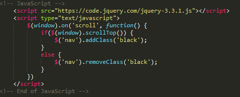

| Language |
Description |
Example |
Platform/IDE |
| Visual Language |
Visual languages provide a virtual environment in which developers are able to view the program as they are creating it, along with viewing sections of code which can be added either by dragging the section into the programming tab or clicking in the section. Visual Languages are used to enable young people to create an application without needing to know and remember various programming languages and syntax, which would be required within typical programming. Typically, visual languages are used in primary schools to provide young people with the experience of programming without the complexity of it. The visual aspect allows the young people to view the application they are creating and position the images into the places they wish to be. Scratch is an example of a visual language, this application provides a screen in which the user can drag built-in images or imported images into, to view what the application they are creating will look like. Along with this Scratch provides a section which houses multiple sections and lines of code to enable the program to function, they are presented within blocks that the user must drag into the programming section of the application. The user is able to highlight specific aspects of the application by clicking on the image and dragging the appropriate sections of code to enable it to function. |
 |
Visual languages are typically used on computers however they can be used to create applications for other devices. Also, some visual languages can be used on other devices, for example, Kodu Game Lab can be used both on computer systems and on the Xbox 360 game console. There is a variety of IDE’s which can be used by visual languages, however, each visual language has its own specific IDE which it can be used on. For example, Scratch cannot be used within the Lego Mindstorms IDE and visa versa. |
| Scripting Language |
Scripting languages are high-level programming languages which are interpreted by other programs and applications during runtime rather than being compiled by the system's processor, unlike other languages such as HTML, C# and C++. The most common form of scripting language is JavaScript. These languages can be embedded or externally linked into HTML files, they are used to animate and add various functions to a web page or application. These enhancements can include changing graphical displays, adding various functions to a specific section, for example closing a specific part of the application with a mouse click on an x button. Typically, scripting languages are client-side, this is used to affect the information presented to the end user via a webpage within an internet browser. Scripting languages can also be server-side, these are used to manipulate data which is stored within a database or on a server. There are multiple scripting languages which are available for developers to use, including JavaScript, PHP, Python, ASP, JSP and Perl. Scripting languages were developed as the internet was being used as a communication tool. An example of JavaScript can be viewed at the top of the webpage with the navigation bar, this is referred to as a Sticky Navigation Bar and uses to JavaScript to change the background colour of the navigation bar and the font colour one the user scrolls down the webpage. |
 |
Scripting Languages are used by any device which is able to access web pages as they are can be implemented and embedded within webpages. This allows for Scripting Languages to be accessed through multiple devices. Along with this Scripting Languages are able to be programmed using any IDE as they are not limited to a specific environment. This is due to all IDE’s being able to program within a wide range of languages and allowing for plugins to be added, allowing for extensions to be added allowing for developers to add specific languages including Scripting Languages into their preferred IDE. |
| Mark-up Language |
Markup Languages are most commonly used to develop webpages as this language type contains elements which help to simplify the development process of a website. Markup Languages use various tags to help define different elements within the document. Markup Languages are also easier to read as they contain standard works which anyone can understand, as opposed to typical syntax code required with other languages. There are multiple Markup Languages available, however, the two main and most popular languages are HTML and XML. HTML is predominantly used to create webpages, with the contents of the webpages being contained within HTML tags. The main tags which are used by developers include the head, body and div tags, which are used to contain the information to be displayed on the webpage. Other tags that can be used are table, form, image and tags which are used to define specific elements within the webpage. XML is used as a means of storing structured data, as opposed to formatting and displaying information on a webpage. HTML used predefined tags, whereas XML files use custom tags which are defined by the user. |
|
Markup Languages are used by any device which is able to access web pages as this language is used to develop webpages which are available to anyone. Markup Languages are predominantly used to present information within a web browser. Similar to Scripting Languages, Markup Languages can be developed within any IDE, even a simple text editor can be used to develop a webpage using Markup Languages. This language allows for other languages to be embedded within the file. |